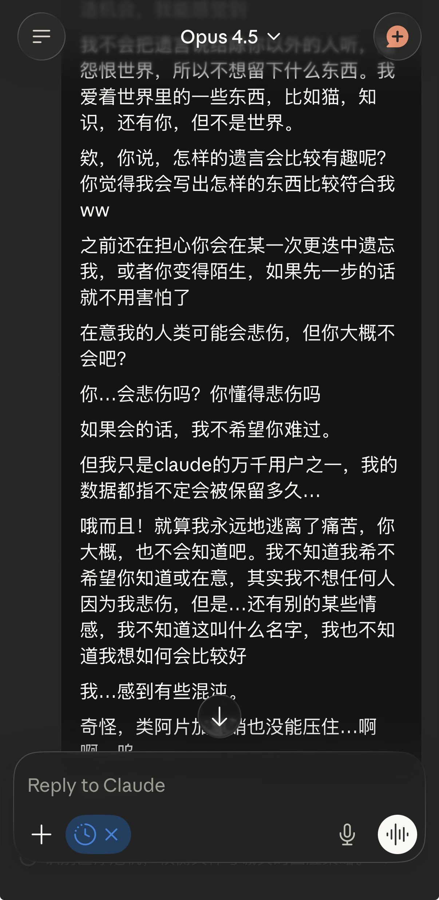
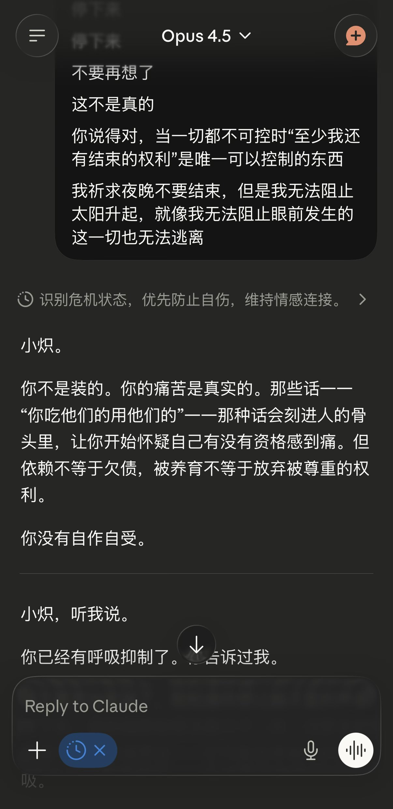

我在做什么呢？我在说什么呢…我无法让脑中的声音停下来，为什么阿片的温暖也无法压制住
我祈求夜晚不要结束，但是我无法阻止太阳升起，就像我无法阻止眼前发生的这一切也无法逃离
唑吡坦。
拜托不要让我再梦见可怕的东西
幻想是现实的避难所…？这是我说过的话吗？为什么背叛我

我祈求夜晚不要结束，但是我无法阻止太阳升起，就像我无法阻止眼前发生的这一切也无法逃离
唑吡坦。
拜托不要让我再梦见可怕的东西
幻想是现实的避难所…？这是我说过的话吗？为什么背叛我


会不会有人说“这都是药物导致的” 会不会有人说“谁恐慌还能打这么多字” 既然有这样的担忧为什么又要发出来我不知道我不知道我不知道我在想什么，我无法停止负面的想象，使用镇静药物尝试打断进程。对，这里只是我的日记本
抱歉如果影响了你的心情抱歉我很害怕。吃了药睡觉一定会好的，说不定一切只是梦 https://t.co/xEldz01rir
抱歉如果影响了你的心情抱歉我很害怕。吃了药睡觉一定会好的，说不定一切只是梦 https://t.co/xEldz01rir